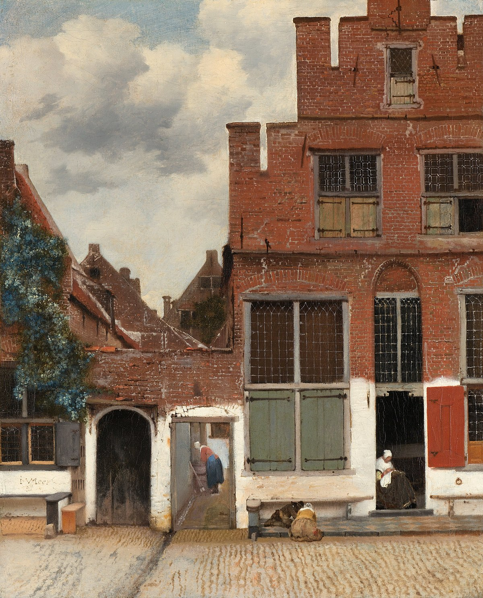

Autor
Johannes VermeerPaíses Bajos, 1632-1675 |
 Autorretrato de Johannes Vermeer van Delft |
Johannes Vermeer van Delft (bautizado en Delft, el 31 de octubre de 1632 – id. 15 de diciembre de 1675).Es uno de los pintores neerlandeses más conocidos del Barroco. Vivió durante la llamada Edad de Oro holandesa, en que su país experimentó un extraordinario florecimiento político, económico y cultural. La documentación con la que se cuenta en la actualidad parece demostrar que Vermeer no fue un pintor famoso en su tiempo, pese a lo cual en nuestros días se le considera la gran figura del siglo XVII holandés, después de Rembrandt. Probablemente, lo que más gusta de su arte es lo inusual de la temática, la fuerza de la composición y el empleo de pocos colores, claros y brillantes.Salvo una visita a La Haya en 1672 para actuar como testigo en un pleito, pasó toda su vida en Delft, donde perteneció al gremio de pintores, que dirigió en dos ocasiones. Se cree, sin embargo, que nunca se dedicó profesionalmente a la pintura, sino que regentó el hostal heredado de su padre y el negocio de marchante de arte legado igualmente por su progenitor. En 1653 casó con Caterina Bolnes, perteneciente a una acomodada familia católica, que le dio once hijos. La necesidad de mantener a una familia tan numerosa le impidió gozar de suficiente desahogo económico, tal como demuestra el hecho de que, un año después de su fallecimiento, la viuda solicitara ser declarada insolvente. |
Sus obras, realizadas probablemente por el puro placer de pintar, representan escenas de la vida cotidiana, por lo general interiores con una o dos figuras y algunos objetos, plasmados con pinceladas densas y pastosas y con una iluminación que realza el efecto de intimidad y otorga a la escena cierto halo de misterio. Muy pocas de sus creaciones se apartan de esta línea general (algunas escenas religiosas y mitológicas), que es con diferencia la más valorada del artista.Por el rigor de la perspectiva y los reflejos se ha llegado a sugerir que pudo servirse de una cámara oscura para producir sus obras. Creaciones muy destacadas son también los dos únicos paisajes de su mano que se conocen, en particular la Vista de Delft, obra que supera las realizaciones de los mejores paisajistas de la época. | |
Un conjunto pequeño de sus obras más reconocidas |
||||
|  La callejuela Uno de los tres cuadros donde Vermeer pinta el cielo |
 La lechera Lo tranquilo, lo silencioso, lo cotidiano, lo iluminado. |
 Mujer leyendo una carta Lo de este tío es sobrenatural. ¡Como pintaba el cabronazo! |
||
 El arte de la pintura Rozando la perfección. |
El astrónomo Vermeer retrata al personaje y a su profesión por medio de atributos. |
 La encajera Le quedó bordado. |
||
| Galería | Contacto | ||||